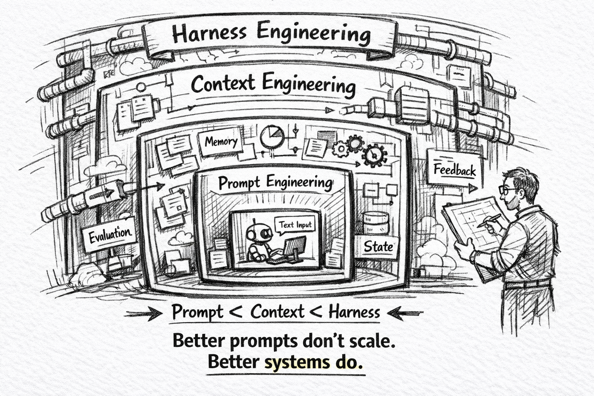

잘 쓰기 위해선Prompt → Context → Harness 엔지니어링의 진화
프롬프트로 말을 잘 한다고 되지 않는다. 컨텍스트를 잘 넣는다고 되지 않는다. 워크플로우 자체를 설계해야 한다.
물리적 한계를 인정한 다음
시리즈 2까지 확인한 것은 이렇다. HBM은 유한하고, KV Cache는 선형으로 증가하며, Context Rot 때문에 많이 넣을수록 오히려 성능이 떨어진다. 이것은 기술의 미성숙이 아니라 구조적 제약이다.
그렇다면 질문은 하나로 모인다.
"유한한 공간 안에서, AI를 어떻게 제대로 활용할 것인가?"
이 질문에 대한 답은 단번에 나온 게 아니다. 세 단계로 진화해 왔다. 각 단계는 이전 단계의 한계를 만나면서 등장했고, 셋은 서로를 대체하는 것이 아니라 쌓여간다.
Stage 1. Prompt Engineering — "어떻게 말할까"
가장 먼저 등장한 접근이다. 같은 모델이라도 어떻게 질문하느냐에 따라 결과가 달라진다는 발견에서 출발했다.
프롬프트 엔지니어링이 하는 일
- Chain of Thought — "단계별로 생각해줘"라고 하면 추론 품질이 올라간다
- Role Prompting — "너는 시니어 보안 엔지니어야"라고 하면 관점이 달라진다
- Few-shot Examples — 예시를 몇 개 주면 원하는 출력 형식을 따라간다
- Output Format — JSON, 마크다운 등 명시적 형식 지정
- Negative Instruction — "이건 하지 마"로 원치 않는 답변을 배제
이 기법들은 지금도 유효하다. 같은 모델이라도 프롬프트의 구조와 표현에 따라 결과 품질이 극적으로 달라진다. 이것 자체는 명백한 사실이다.
프롬프트 엔지니어링의 한계
하지만 프롬프트 엔지니어링만으로는 대규모 프로젝트에서 일관된 품질을 유지할 수 없다. 이유는 단순하다.
말을 잘 한다고 해서 조리대가 커지는 건 아니다.
"이 함수를 최적화해줘"라는 프롬프트를 아무리 정교하게 다듬어도, AI가 그 함수와 연결된 다른 50개 파일을 보지 못한다면 최적화 결과는 위험할 수 있다. 아무리 "단계별로 신중하게 생각해줘"라고 해도, 볼 수 없는 정보를 고려할 수는 없다.
프롬프트 엔지니어링이 해결하는 것은 "어떻게 말할까"다. 하지만 AI가 처리해야 할 실제 문제의 많은 부분은 "무엇을 보여줄까"에 달려 있다. 그리고 이것은 프롬프트의 영역이 아니다.
[ 프롬프트 엔지니어링이 해결하는 것 ]
✓ 모델의 응답 스타일
✓ 추론의 단계와 깊이
✓ 출력 형식
✓ 역할과 톤
[ 프롬프트 엔지니어링이 해결하지 못하는 것 ]
✗ 컨텍스트 윈도우에 무엇을 넣을 것인가
✗ 긴 세션에서의 일관성
✗ 외부 데이터와의 연결
✗ 여러 단계의 작업 흐름프롬프트 엔지니어링은 단일 상호작용(one-shot)을 최적화한다. 그리고 대부분의 실제 문제는 단일 상호작용으로 끝나지 않는다.
Stage 2. Context Engineering — "무엇을, 얼마나, 어떤 순서로 넣을까"
프롬프트 엔지니어링의 한계가 명확해지면서 등장한 것이 컨텍스트 엔지니어링이다.
"컨텍스트 엔지니어링은 컨텍스트 윈도우를 정교하게 설계하는 예술과 과학이다."
— Andrej Karpathy
핵심 질문이 "어떻게 말할까"에서 "무엇을, 얼마나, 어떤 순서로 넣을까"로 바뀌었다.
컨텍스트 윈도우를 구성하는 요소들
| 구성 요소 | 역할 | 비유 |
|---|---|---|
| 시스템 프롬프트 | 모델의 행동 규칙과 정체성 | 업무 매뉴얼 |
| Instruction | 작업별 구체적 가이드라인 | 오늘의 업무 지시서 |
| Skill | 상황별로 꺼내 쓰는 구조화된 도구 | 전문 참고서 |
| RAG / 외부 데이터 | 필요한 시점에 검색해 주입 | 필요할 때 꺼내보는 서랍 |
| 대화 히스토리 | 이전 맥락 유지 | 회의록 |
| 도구 호출 결과 | MCP, API 등 외부 시스템 응답 | 실시간 조회 결과 |
컨텍스트 엔지니어링의 실전은 "에이밍(Aiming)"이다. 냉장고에 가득한 재료 중 지금 이 요리에 필요한 것만 정확히 골라서 조리대에 올리는 것. 불필요한 것은 빼고, 필요한 것만 남기고, 올바른 순서로 배치한다.
RAG와 MCP — 컨텍스트 엔지니어링의 인프라
컨텍스트 엔지니어링을 실전에서 가능하게 만든 두 가지 핵심 기술이 있다.
RAG (Retrieval-Augmented Generation) — 모든 정보를 미리 컨텍스트에 넣어두는 대신, 필요할 때 검색해서 주입하는 패턴. 대규모 문서나 코드베이스를 다룰 때 필수다.
MCP (Model Context Protocol) — Anthropic이 만든 표준화된 프로토콜. AI 에이전트가 데이터베이스, 검색 엔진, API 등 외부 도구와 소통할 수 있게 한다. "컨텍스트의 USB-C"라고 불린다. RAG를 처음 제안한 연구자조차 "이제 사람들이 MCP와 RAG를 포함해 컨텍스트 엔지니어링이라고 리브랜딩했다"고 인정할 정도로 핵심 인프라가 되었다.
프롬프트 엔지니어링과의 관계
프롬프트 엔지니어링은 컨텍스트 엔지니어링의 하위 영역이다.
컨텍스트 엔지니어링 (윈도우 전체를 설계)
│
├── 시스템 프롬프트 설계
├── RAG 파이프라인 설계
├── 도구 호출 전략
└── 프롬프트 엔지니어링 (선별된 윈도우 안에서 구체적 지시문 작성)컨텍스트 엔지니어링이 "윈도우를 무엇으로 채울지"를 결정하는 반면, 프롬프트 엔지니어링은 그 선별된 윈도우 안에서 구체적인 지시문을 어떻게 쓸지에 초점을 맞춘다.
컨텍스트 엔지니어링의 한계
컨텍스트 엔지니어링은 분명한 진전이다. 하지만 여기에도 한계가 있다.
문제 1. 단일 세션의 벽. 컨텍스트 엔지니어링은 하나의 대화 세션 안에서 윈도우를 최적화한다. 하지만 실제 소프트웨어 개발은 한 세션으로 끝나지 않는다. 요구사항 분석 → 설계 → 테스트 → 구현 → 리뷰 → 배포까지, 수십 개의 세션이 연결된다. 한 세션의 결정이 다음 세션으로 어떻게 전달되는가? 컨텍스트 엔지니어링은 이 질문에 답하지 않는다.
문제 2. 긴 세션의 저주. 하나의 세션을 길게 끌고 가면 시리즈 2에서 본 Context Rot이 발생한다. 초반의 중요한 결정이 후반의 대량의 토큰에 묻혀버린다. 컨텍스트 엔지니어링으로 윈도우를 정교하게 설계해도, 세션 자체가 길어지면 그 설계가 무너진다.
문제 3. 일관성과 추적성 부재. 같은 요구사항에 대해 세션마다 다른 결과가 나올 수 있다. "이번 세션에서는 이 API를 썼는데, 다음 세션에서는 다른 API를 쓴다" 같은 일이 벌어진다. 어떤 결정이 어디서 내려졌는지 추적할 방법이 없다.
문제 4. 자기 수정의 부재. 세션 중간에 실패를 발견해도, 어디로 돌아가야 하는지 모른다. 요구사항이 잘못됐나? 설계가 문제인가? 구현 버그인가? 컨텍스트 엔지니어링은 이 분류를 지원하지 않는다.
[ 컨텍스트 엔지니어링이 해결하는 것 ]
✓ 단일 세션에서의 재료 선별
✓ 외부 데이터의 동적 주입
✓ 도구와의 표준화된 소통
[ 컨텍스트 엔지니어링이 해결하지 못하는 것 ]
✗ 세션 간의 맥락 전달
✗ 긴 세션의 일관성
✗ 작업의 추적성
✗ 실패 시의 자기 수정컨텍스트 엔지니어링은 단일 세션(one-session)을 최적화한다. 그리고 대부분의 실제 소프트웨어 프로젝트는 단일 세션으로 끝나지 않는다.
Stage 3. Harness Engineering — "워크플로우 자체를 설계한다"
프롬프트 엔지니어링은 "어떻게 말할까"를 해결했다. 컨텍스트 엔지니어링은 "무엇을 넣을까"를 해결했다. 그런데 그 다음 질문이 남았다.
"어떤 순서로, 누가, 어떻게 실행할까?"
이 질문에 답하는 것이 하네스 엔지니어링(Harness Engineering)이다.
하네스란 무엇인가
"Harness"는 마구(馬具)다. 말이 자유롭게 달리면 강력하지만, 방향이 없다. 마구를 채우면 말의 힘을 특정 방향으로 제어할 수 있다. 힘을 빼앗는 것이 아니라, 힘을 유용한 방향으로 돌리는 것이다.
AI 에이전트도 마찬가지다. 자유롭게 풀어주면 강력하지만 예측 불가능하다. 하네스를 씌우면 에이전트의 능력을 일관된 워크플로우에 묶을 수 있다. 능력을 제한하는 것이 아니라, 능력을 안전하고 재현 가능한 방향으로 돌리는 것이다.
하네스 엔지니어링이 설계하는 것
프롬프트나 컨텍스트가 아니라, 작업의 실행 구조 자체를 설계한다.
- Phase 분할 — 하나의 큰 작업을 AI가 소화할 수 있는 단위로 쪼갠다
- 역할 분리 — 어떤 Phase를 누가(Main Agent / Sub-Agent) 실행할지 정의
- 산출물 정의 — 각 Phase가 다음 Phase에 무엇을 넘길지 명확히 규정
- 추적성 메커니즘 — Phase 간의 맥락을 잇는 문서 (예: RTM)
- 자기 수정 경로 — 실패 시 어디로 돌아갈지 구조적으로 정의 (LOOPBACK)
- 인간 개입 지점 — 자동 실행과 인간 검증의 경계를 Gate로 배치
진화의 핵심 — 대체가 아니라 적층
여기서 가장 중요한 포인트가 있다. 이 세 단계는 서로를 대체하지 않는다. 대신 쌓인다.
┌─────────────────────────────────────────────┐
│ Harness Engineering — 워크플로우 전체 최적화 │
│ ┌───────────────────────────────────────┐ │
│ │ Context Engineering — 세션 최적화 │ │
│ │ ┌─────────────────────────────────┐ │ │
│ │ │ Prompt Engineering — 상호작용 │ │ │
│ │ └─────────────────────────────────┘ │ │
│ └───────────────────────────────────────┘ │
└─────────────────────────────────────────────┘- 좋은 하네스 안에서 좋은 컨텍스트가 제공되고
- 그 안에서 좋은 프롬프트가 실행된다
하네스 엔지니어링은 프롬프트나 컨텍스트를 부정하지 않는다. 오히려 이 둘이 가장 잘 작동할 수 있는 구조를 만든다. Phase를 분할해서 각 Phase의 컨텍스트가 작고 집중되게 하고(컨텍스트 엔지니어링이 빛나는 조건), 각 Phase 내부에서는 정교한 프롬프트가 작동한다(프롬프트 엔지니어링이 빛나는 조건).
세 단계의 비교
| 관점 | 프롬프트 | 컨텍스트 | 하네스 |
|---|---|---|---|
| 최적화 단위 | 한 번의 질문 | 한 세션의 윈도우 | 전체 작업 흐름 |
| 핵심 질문 | 어떻게 말할까 | 무엇을 넣을까 | 어떤 순서로 실행할까 |
| 해결 문제 | 응답 품질 | 정보 선별 | 일관성, 추적성, 자기수정 |
| 시간 스케일 | 1회 호출 | 1 세션 | 프로젝트 전체 |
| 주요 기법 | CoT, Role, Few-shot | RAG, MCP, 동적 주입 | Phase 분할, RTM, LOOPBACK |
| 한계 | 컨텍스트 부족에 무력 | 세션이 길면 Context Rot | 설계 비용이 높음 |
| 비유 | 말을 잘 한다 | 재료를 잘 고른다 | 요리 공정을 설계한다 |
세 단계는 시간 스케일에서도 다르다. 프롬프트는 초 단위, 컨텍스트는 분~시간 단위, 하네스는 프로젝트 전체 기간에 걸쳐 작동한다.
그리고 문제의 스케일도 다르다. 작은 문제는 프롬프트 엔지니어링만으로 해결된다. 중간 규모 문제는 컨텍스트 엔지니어링이 필요하다. 대규모 소프트웨어 프로젝트에서는 하네스 엔지니어링 없이는 일관된 품질을 보장할 수 없다.
왜 하네스인가 — 실전의 요구
"굳이 하네스까지 필요한가? 컨텍스트 엔지니어링으로 충분하지 않나?"
이 질문에 대한 답은 실전 요구사항에서 나온다.
1. 일관성 — 같은 요구사항, 같은 결과
팀 프로젝트에서 가장 두려운 것은 비일관성이다. 같은 요구사항에 대해 월요일에 짠 코드와 수요일에 짠 코드가 다르면, 시스템은 무너진다. 컨텍스트 엔지니어링만으로는 세션 간 일관성을 보장할 수 없다. 하네스는 재현 가능한 워크플로우를 통해 이 문제를 해결한다.
2. 추적성 — "왜 이렇게 됐는가"에 답할 수 있어야 한다
6개월 뒤에 버그가 발생했을 때, "이 코드가 왜 이렇게 작성됐는가?"라는 질문에 답할 수 있어야 한다. 요구사항 → 설계 → 테스트 → 구현이 연결되어 있어야 한다. 하네스는 추적성 매트릭스(RTM)를 워크플로우의 중심에 두고, 모든 결정의 맥락을 명시적으로 기록한다.
3. 자기 수정 — 실패를 구조적으로 복구한다
실패 없는 개발은 없다. 중요한 것은 실패했을 때 어디로 돌아갈지다. 요구사항이 잘못됐으면 요구사항 분석으로, 설계가 문제면 설계 단계로, 구현 버그면 구현 단계로. 하네스는 실패의 원인을 분류하고 적절한 단계로 돌아가는 LOOPBACK 메커니즘을 구조적으로 내장한다.
4. 책임의 경계 — 인간은 어디서 개입하는가
완전 자율은 위험하고, 완전 수동은 AI의 가치를 없앤다. 하네스는 Gate를 통해 자동 실행과 인간 검증의 경계를 명시적으로 정의한다. AI가 어디까지 결정하고, 인간이 어디서부터 개입할지가 설계에 담긴다.
이 네 가지는 프롬프트로도, 컨텍스트로도 해결되지 않는다. 워크플로우 레벨의 설계가 필요하다.
본질을 아는 사람의 질문
시리즈 1의 개발자 마인드셋 부분에서 했던 말이 있다.
- 유행을 쫓는 개발자 → "이 새 툴 써봐야 하나?"
- 본질을 아는 개발자 → "이 툴은 그 한계를 어떻게 풀었지?"
지금까지의 논의를 이 프레임으로 다시 보면, AI 에이전트의 모든 새 툴들은 결국 세 엔지니어링의 어떤 조합을 제공하는 것이다.
- "이 툴은 더 좋은 프롬프트 템플릿을 제공하는가?" → 프롬프트 레이어
- "이 툴은 RAG나 MCP를 더 잘 다루는가?" → 컨텍스트 레이어
- "이 툴은 워크플로우 자체를 구조화하는가?" → 하네스 레이어
세 레이어를 이해하고 나면, 새 툴을 볼 때 "이것이 어느 레이어의 문제를 푸는 것인가"를 질문할 수 있다. 그리고 대부분의 실전 문제가 하네스 레이어에서 발생한다는 사실을 알게 된다. 프롬프트와 컨텍스트는 이미 성숙했지만, 하네스는 아직 많은 프로젝트가 임시방편으로 넘어가고 있다.
다음 편 예고
하네스 엔지니어링이 필요하다는 것은 이해했다. 그런데 하네스를 설계할 때 가장 먼저 고려해야 할 원칙은 무엇일까?
답은 하나다. "나눠서 정복한다(Divide and Conquer)."
거대한 작업을 AI에게 통째로 던지면 실패한다. 작은 조각으로 나누고, 각 조각의 컨텍스트를 격리하고, 조각들을 추적 가능하게 잇는 것. 이것이 하네스 엔지니어링의 핵심 전략이다.